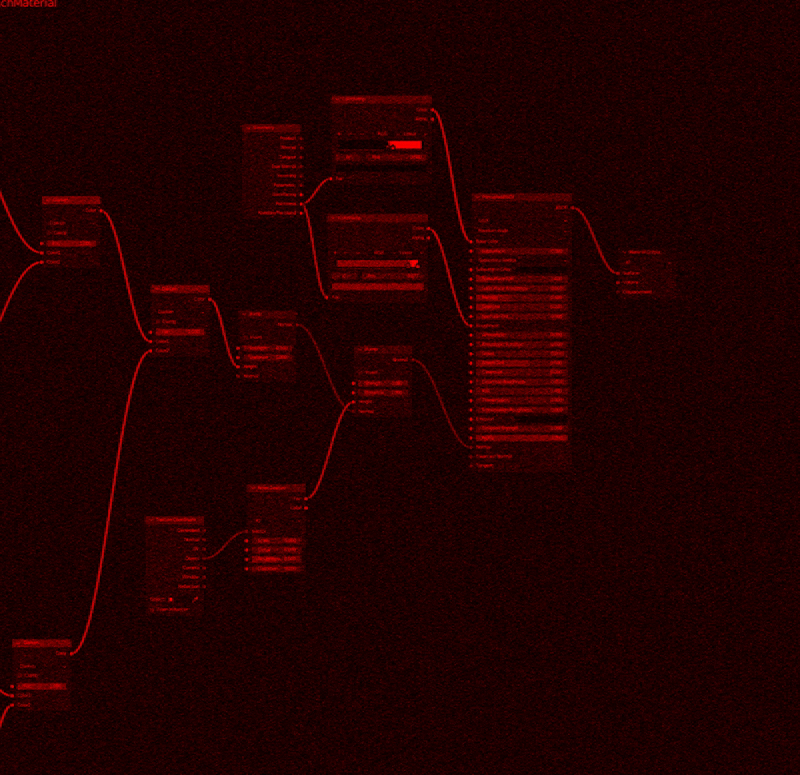

Diary
Objective Portiature (WORKSHOP)
Introduction to object recognition algorithm. Workshop was led by Gijs de Boer & Vera van der Burg.
The first week. Images and possibilites
The first week started with good vibes. This is my first time working with brief-based assignments, so I tried to pay as much attention as possible. Conceptual thinking when approaching to. A design project is completely new to me. What it seems is that theres more attention paid to the idea of the” Why” question more into the process of designing. I rarely do conceptual thinking when it comes to my design process. This is usually reserved for artwork projects, but it is interesting to reflect on these subjects in a design context. My process is usually practice-based, but I wish The first assignment already started to challenge my usual practice. Reflecting on what context the AI. I usually work with moving images when it comes to works, but I want to use this course as a chance to see what I can do.
Labeling / Adjutating
Adudating images was a new feeling for me that I had not experienced before. When I eventually got out of the labeling dilemma that I had in my hands, I started to enjoy the labelling process quite a bit. Due to the nature of my images, the repetition became very big. Part of my labeling process, where I didnt need to stay too long for each of the photos. When repetition was added I stopped each photo for so long and just started to continue and continue labelling. At the end of the process, I was left with calm, but still a bit uncertain feelings due to the beginning bumps.

Production
After the labeling was done, I moved into choosing the way of replicating the data set that I had trained. The faces themselves werent the subject matter that I was interested in photos. It was the momentary distortion that was happening due to momentary strong physical force. I felt that using straight-up faces would have been too easy and I did not want to force faces through distortion through synthesis. If I was going to artificially create distortion, I could have gone all the way with it. For those reasons, I decided to use Blender and After Effects as my main tools.
I started by making a still image in Blender and then adjusting its nature by modifying it even more in Photoshop. The first experiences were interesting but did not create results that I felt represented the nature of the original photos. Therefore I continued the process even further. I tried to create a similar type of wear and tear that skin usually has.
The still photos were interesting experimentation, but I felt were lacked something. When I received the first versions from the test of the algorithm reacting to the photos I felt a bit underwhelmed. The algorithm did not seem to respond and recognize my own perception when I saw the dataset photos for the first time. This drove me to use one of my still images as a base for my video.
In the end, I was way more pleased with the results that I received from the video, but I was still happy to go through and produce the still images. It gave me a lot of interesting comparison points with the video. The production phase itself felt rewarding, but I feel like I underdetermined the amount of work that was being processed, and for the next adaptations, I would like to use more time experimenting with different techniques and materials.
Feedback
The feedback that I received from the final outputs was interesting. I have never participated in such open dialogue about each others work, and also given straight feedback. The whole workshop lasted only a couple of days but I was happy with the final product that I had made.
Reflection
The duration of the workshop was one of the first ones where I have conceptually challenged myself in a real meaningful way. It was an interesting first attempt at flexing my muscles while working with object recognition systems.
The workshop forced me to dig deeper inside of my own emotional response to the images that I got. At first, I felt that I was walking in tar, not getting the idea of what they were trying to get out of me. This became apparent, especially in the labeling phase. In retrospect, I should have not thought about my choices that much and shifted my focus from the nature of the images to their behavior.
.gif)
Final Output(Modified)
This is the final output of the workshop. For more detailed and higherquality video go to XX.